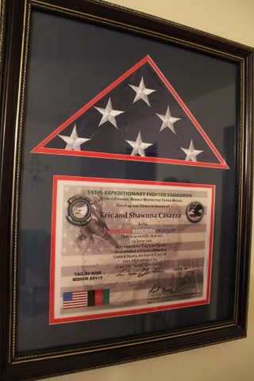
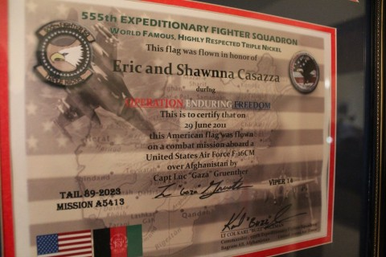

Luc's sent us a letter with an excerpt from his journal about the mission, but I won't share that here. Instead, I'll share Luc's comments about the event that he posted on his blog.
Luc�s
Comments: This story is too
long to tell, but the photo above shows Clutch and me with 2 members of
the New Jersey Army National Guard. I had dropped a bomb to help them
break contact when they were pinned down by enemy fire in the mountains.
The vehicle we're standing in front of took a direct hit from a rocket
propelled grenade (RPG) during the firefight. Note the frayed rope where
the RPG entered the vehicle. Thankfully, these dudes executed solid
tactics and, with the help of some air power, got out of there with no
injuries. Meeting them was the highlight of the deployment for me.

Eric and I are not very materialistic people, we don't like to be tied down
to objects. However, this is surely our most treasured
possession. Thank you Luc.

